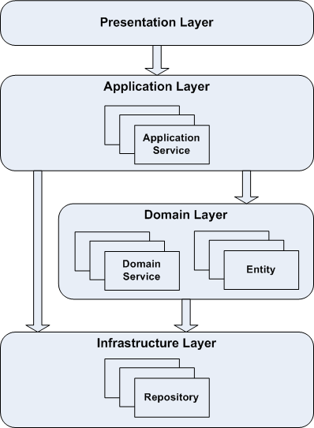

Layered Architecture
In an object oriented program UI, database, and other support code often gets written directly into the business objects. Additional business logic is embedded in the behavior of UI widgets and database scripts. This happens because it is the easiest way to make things work, in the short run. When the domain related code is diffused through such a large amount of other code, it becomes extremely difficult to see and reason about. Superficial changes to the UI can actually change business logic. To change a business rule may require meticulous tracing of UI code, database code, or other programming elements. Implementing coherent model driven objects impractical and automated testing is awkward. With all the technologies and logic involved in each activity, a program must be very simple or it becomes impossible to understand.
Therefore:
- Partition a complex program into ’layer’s.
- Develop a design within each ‘layer’ that is cohesive and that depends only on the layers below.
- Follow standard architectural patterns to provide loose coupling to the layers above by means of a mechanism such as Observer or Mediator; there is never a direct reference from lower to higher.
- Concentrate all the code related to the domain model in one layer and isolate it from the user interface, application, and infrastructure code. The domain objects, free of the responsibility of displaying themselves, storing themselves, managing application tasks, and so forth, can be focused on expressing the domain model. This allows a model to evolve to be rich and clear enough to capture essential business knowledge and put it to work.
A typical enterprise application architecture consists of the following four conceptual layers:
- Presentation Layer - Responsible for presenting information to the user and interpreting user commands.
- Application Layer - Layer that coordinates the application activity. It doesn’t contain any business logic. It does not hold the state of business objects, but it can hold the state of an application task’s progress.
- Domain Layer - This layer contains information about the business domain. The state of business objects is held here. Persistence of the business objects, and possibly their state is delegated to the infrastructure layer.
- Infrastructure Layer - This layer acts as a supporting library for all the other layers. It implements persistence for business objects, contains supporting libraries, etc.

Application layer.
The application layer:
- Is responsible for the navigation between the UI screens in the bounded context as well as the interaction with application layers of other bounded contexts.
- Can perform the basic (non business related) validation on the user input data before transmitting it to the other (lower) layers of the application.
- Doesn’t contain any business or domain related logic.
- Doesn’t have any state reflecting a business use case but it can manage the state of the user session or the progress of a task.
- Contains application services.
Domain layer.
The domain layer:
- Is responsible for the concepts of business domain, and the business rules. Entities encapsulate the state and behavior of the business domain.
- Manages the state of a business use case if the use case spans multiple user requests, (e.g. loan registration process which consists of multiple steps: user entering loan details, system returning products and rates, user selecting particular product, system locking the loan for selected rate).
- Contains domain services.
- Is the heart of the bounded context and should be well isolated from the other layers. Also, it should not be dependent on the application frameworks used in the other layers, (Hibernate, Spring, etc).
CRUD operations
TODO: see Domain Driven Design (DDD) architecture layer design for CRUD operation